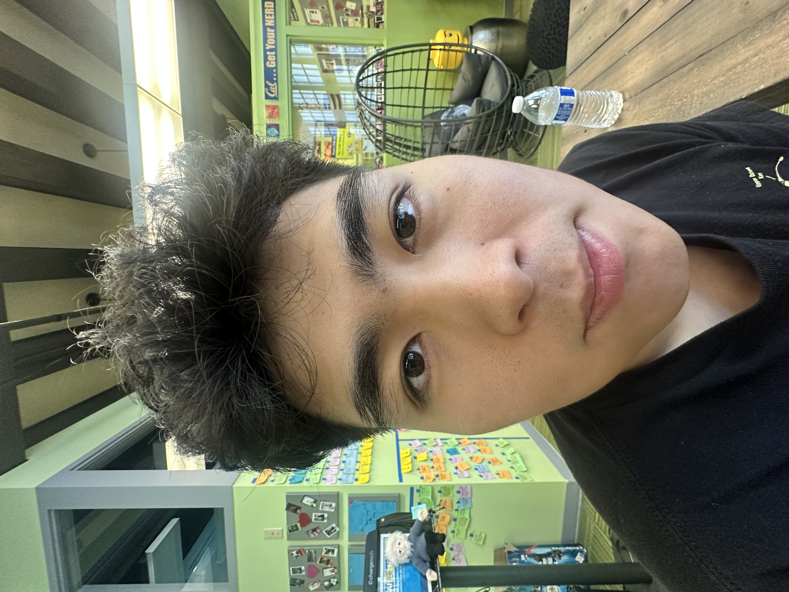
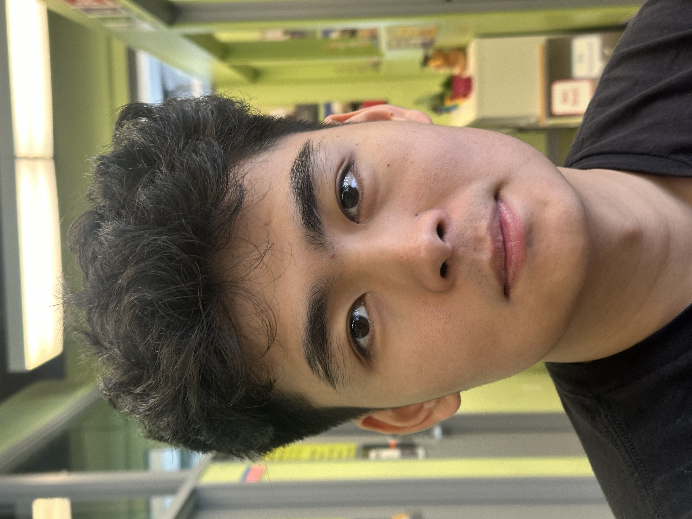
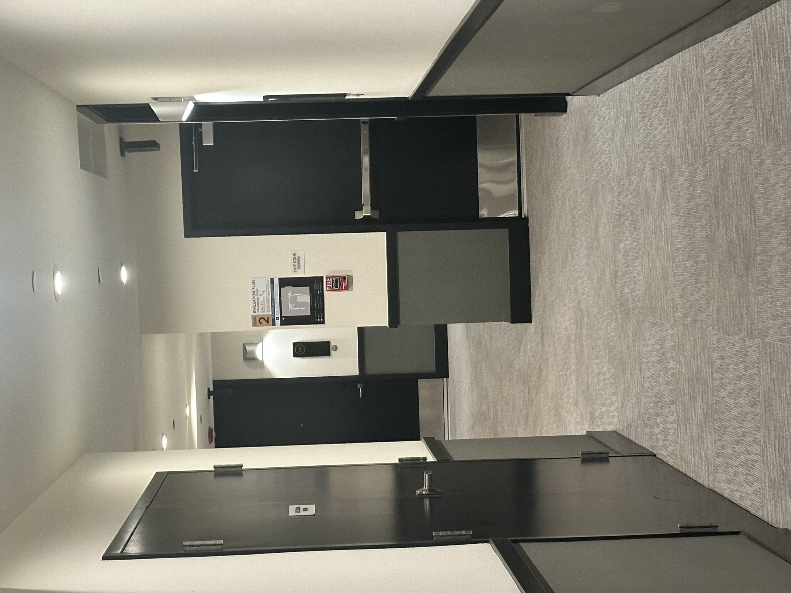
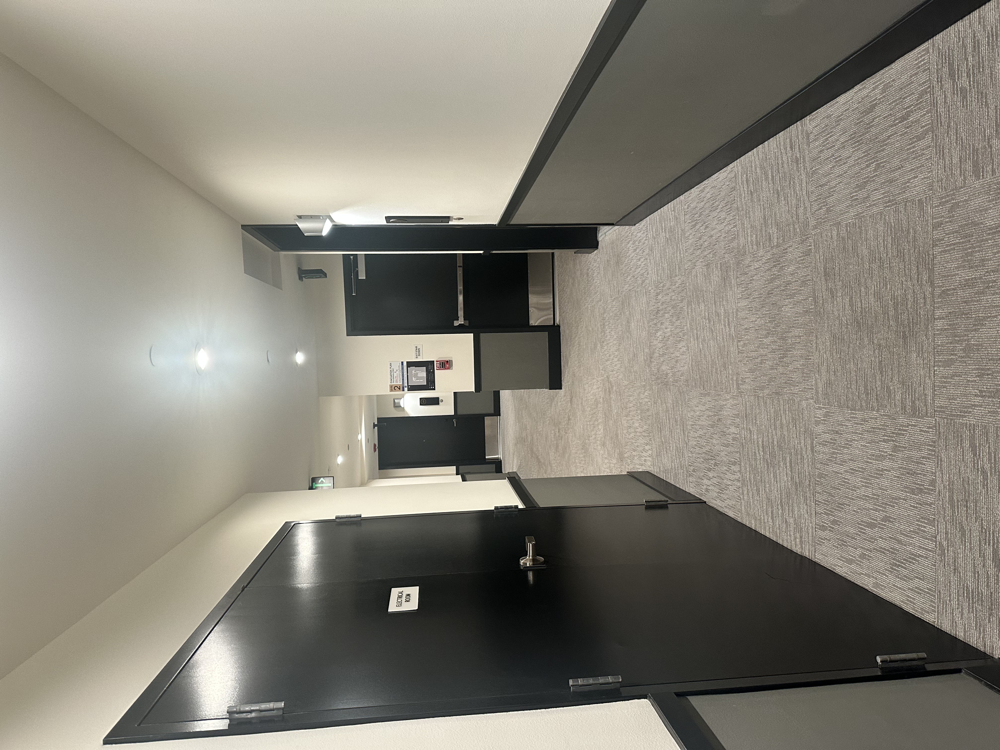
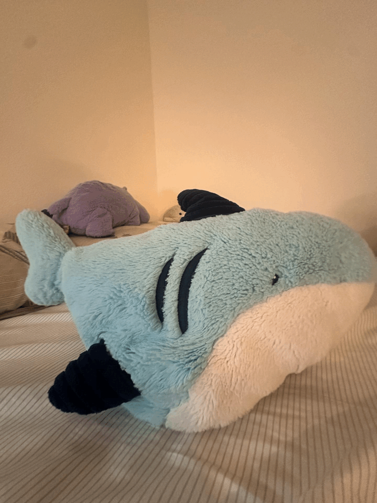

Close portrait comparison — left: close-up; right: stepped-back + zoomed to match face size.


Hallway scene comparison — left: zoomed from afar (flatter look); right: moved closer, no zoom.

Dolly Zoom — camera dolly back + zoom in, keeping subject size roughly constant.